Chapitre V — Statistiques inférentielles
Les statistiques descriptives, vues dans le chapitre précédent, permettent de résumer et de visualiser des données. Elles répondent à des questions du type : quelle est la moyenne des observations de mon échantillon ? ou quelle est la dispersion de mes données ?
Les statistiques inférentielles vont plus loin : elles permettent de tirer des conclusions sur une population entière à partir d'un échantillon. En d'autres termes, on cherche à inférer des propriétés d'un grand ensemble (la population) à partir d'un petit nombre d'observations (l'échantillon).
Un sondage interroge 1 000 personnes sur leurs intentions de vote. On ne connaît pas les intentions de l'ensemble de la population, mais on souhaite les estimer à partir de cet échantillon. Les statistiques inférentielles nous donnent les outils pour quantifier la précision de cette estimation.
Ce passage du particulier au général est rendu possible grâce à des outils mathématiques, notamment la loi normale et le théorème central limite, que nous allons étudier dans ce chapitre.
V.1 Loi normale
V.1.1 Courbe de Gauss
Une courbe de Gauss, ou courbe gaussienne, courbe normale, courbe en cloche, normale, est une fonction définie par la formule :
$$ f(x) = \frac{1}{\sigma \sqrt{2\pi}} e^{-\frac{(x - \mu)^2}{2\sigma^2}} $$
où $\mu$ et $\sigma$ sont des paramètres de la distribution : $\mu$ est la moyenne et $\sigma$ est l'écart-type.
Si la moyenne $\mu$ est égale à 0 on dit que la courbe est centrée, et si l'écart-type $\sigma$ est égal à 1 on dit que la courbe est réduite. Si les deux conditions sont vérifiées, c'est-à-dire si la courbe est centrée et réduite, on dit que la courbe est standardisée. La courbe normale standardisée a donc pour formule :
$$ f(x) = \frac{1}{\sqrt{2\pi}} e^{-\frac{x^2}{2}} $$
Notez que vous n'avez pas besoin d'apprendre par cœur la formule de la courbe de Gauss, mais il est important de comprendre les rôles des paramètres $\mu$ et $\sigma$ dans la formule.
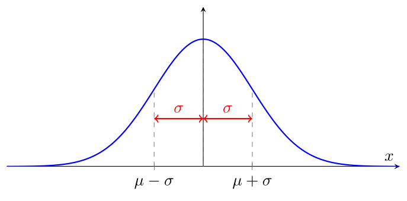
Effets des paramètres $\mu$ et $\sigma$ sur la courbe de Gauss
Les deux paramètres $\mu$ et $\sigma$ contrôlent respectivement la position et la forme (ou, si vous préférez, la concentration) de la courbe normale.
Effet de la moyenne $\mu$ :
Le paramètre $\mu$ détermine le centre de la courbe. Modifier $\mu$ translate la courbe horizontalement sans changer sa forme.
On observe que la courbe conserve exactement la même forme, mais se déplace vers la droite lorsque $\mu$ augmente. La moyenne $\mu$ correspond toujours au sommet de la courbe.
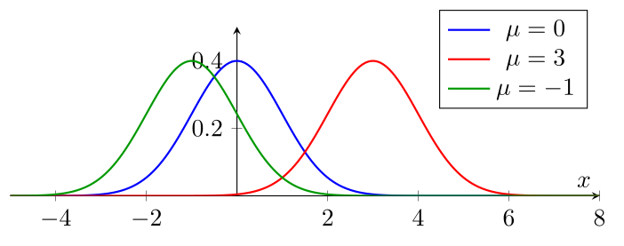
On voit également que la courbe est symétrique par rapport à la verticale passant par $\mu$, où la courbe atteint son maximum : on peut donc lire graphiquement la valeur de $\mu$ en lisant la position du sommet de la courbe.
Effet de l'écart-type $\sigma$ :
Le paramètre $\sigma$ contrôle l'étalement de la courbe. Un $\sigma$ petit produit une courbe haute et étroite, tandis qu'un $\sigma$ grand produit une courbe basse et étalée. L'aire sous la courbe reste toujours égale à 1.
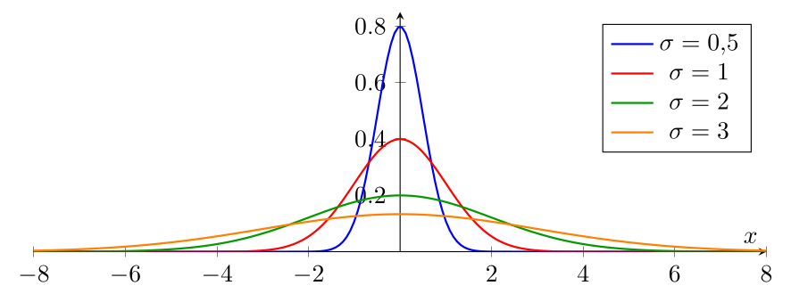
On voit que la courbe devient de plus en plus étalée et de moins en moins haute à mesure que $\sigma$ augmente.
On peut estimer graphiquement l'écart-type $\sigma$ en observant la distance entre la moyenne $\mu$ et les points d'inflexion de la courbe, c'est-à-dire les points où la courbe change de « courbé vers le bas » près de son maximum à « courbé vers le haut » dans les queues. Ces points d'inflexion se trouvent à une distance de $\sigma$ de la moyenne $\mu$.
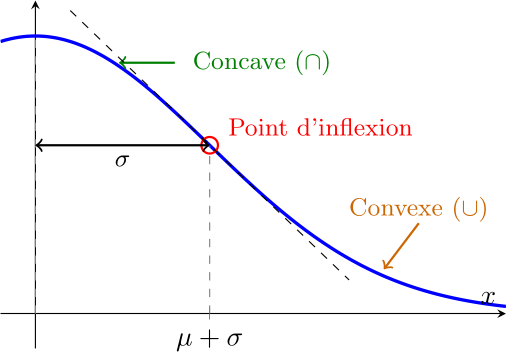
V.1.2 Loi normale
On dit qu'une variable quantitative $x$ suit une loi normale de paramètres $\mu$ et $\sigma$ si la proportion des observations de $x$ entre deux valeurs $a$ et $b$ (quand le nombre d'observations tend vers l'infini) est égale à l'aire sous la courbe de Gauss de paramètres $\mu$ et $\sigma$ entre les points $a$ et $b$.
En d'autres termes, si $p$ est la proportion d'observations de $x$ dans l'intervalle $[a, b]$, alors :
$$ p = \int_a^b \frac{1}{\sigma \sqrt{2\pi}} e^{-\frac{(x - \mu)^2}{2\sigma^2}} \, dx $$
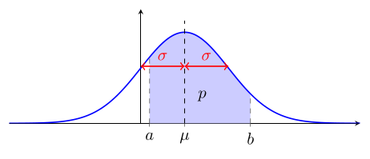
La notation mathématique $\int_{a}^{b}$ se lit « intégrale de $a$ à $b$ » et représente l'aire sous une courbe entre les points $a$ et $b$.
Si $x$ suit une loi normale de paramètres $\mu$ et $\sigma$, on note $x \sim \mathcal{N}(\mu, \sigma^2)$.
Pour des $a$ et $b$ quelconques, il n'existe malheureusement pas de formule simple pour calculer l'aire sous la courbe. Pour calculer cette aire, on utilise soit des tables (comme vous le ferez à l'examen), soit des ordinateurs (comme vous le ferez en Excel).
Si on considère une variable $z$ qui suit une loi normale standard, on peut considérer la fréquence cumulée de $z$ à une valeur $a$ donnée, c'est-à-dire la proportion d'observations de $z$ inférieures ou égales à $a$. Cette fréquence cumulée correspond à l'aire sous la courbe de Gauss standardisée entre $-\infty$ et $a$. Le $-\infty$ vient du fait qu'on ne limite pas $z$ vers le bas, on peut avoir des valeurs aussi petites que l'on veut et donc $-\infty$ est la seule chose qui est inférieure à toutes les valeurs possibles de $z$.
Elle s'appelle la fonction de répartition de la loi normale standard et on la note $\Phi(z)$ :
$$ \Phi(z) = \int_{-\infty}^z \frac{1}{\sqrt{2\pi}} e^{-\frac{x^2}{2}} \,dx $$
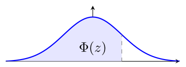
Les valeurs de la fonction $\Phi(z)$ sont comme suit :
| $z$ | 0.00 | 0.01 | 0.02 | 0.03 | 0.04 | 0.05 | 0.06 | 0.07 | 0.08 | 0.09 |
|---|---|---|---|---|---|---|---|---|---|---|
| 0.0 | 0.5000 | 0.5040 | 0.5080 | 0.5120 | 0.5160 | 0.5199 | 0.5239 | 0.5279 | 0.5319 | 0.5359 |
| 0.1 | 0.5398 | 0.5438 | 0.5478 | 0.5517 | 0.5557 | 0.5596 | 0.5636 | 0.5675 | 0.5714 | 0.5753 |
| … | ||||||||||
| 0.9 | 0.8159 | 0.8185 | 0.8212 | 0.8238 | 0.8264 | 0.8289 | 0.8315 | 0.8340 | 0.8365 | 0.8389 |
| 1.0 | 0.8413 | 0.8438 | 0.8461 | 0.8485 | 0.8508 | 0.8531 | 0.8554 | 0.8577 | 0.8599 | 0.8621 |
Attention, la notation $\Phi$ n'est pas standardisée : dans certains livres, on peut trouver la notation $F(z)$ ou $P(z)$ pour la même fonction.
En pratique, même si on ne peut pas la calculer directement sans l'usage d'une table, la fonction $\Phi$ a l'allure suivante :
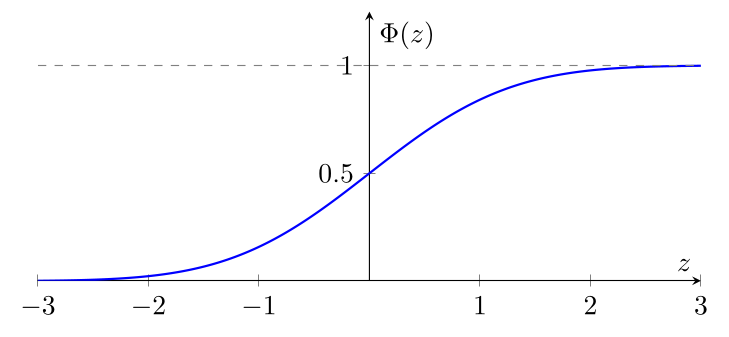
Dans ces conditions, comment calculer à la main la proportion d'observations de $x$ supérieures à 14,86 si on sait que $x$ suit une loi normale de moyenne $\mu = 10$ et d'écart-type $\sigma = 5$ (par exemple) ? En théorie, il faudrait avoir accès à une table de la courbe de Gauss de moyenne 10 et d'écart-type 5. Il faudrait en fait avoir une table pour chaque valeur de $\mu$ et de $\sigma$ que l'on pourrait rencontrer, ce qui est évidemment impossible. Heureusement, il existe une astuce.
Si $x$ suit une loi normale de moyenne $\mu$ et d'écart-type $\sigma$, alors la cote $z$ de $x$, $$z = \frac{x - \mu}{\sigma},$$ suit une loi normale standard, c'est-à-dire de moyenne 0 et d'écart-type 1.
Cela nous donne la méthode suivante :
Supposons qu'on a une variable $x$ qui suit une loi normale de moyenne $\mu$ (par exemple 10) et d'écart-type $\sigma$ (par exemple 5), et $a < b$ des nombres (par exemple -5 et 14,86).
Calculer la proportion en dessous de $b$.
-
On calcule la cote $z$ de $b$ : $\displaystyle z = \frac{b - \mu}{\sigma}$. Dans notre exemple, $z = \frac{14,86 - 10}{5} = 0,97$.
-
Dans la table de $\Phi(z)$, on regarde la valeur à l'intersection de la colonne correspondant aux centièmes de $z$ (ici, $0,07$) et de la ligne correspondant aux dixièmes de $z$ (ici, $0,9$). On trouve $\Phi(0,97) = 0,8340$.
Calculer la proportion au-dessus de $a$.
-
On calcule la cote $z$ comme avant et on lit $\Phi(z)$ : la proportion d'observations de $x$ inférieures ou égales à $a$, comme dans le point précédent.
-
On calcule la proportion d'observations de $x$ supérieures à $a$ : $$1 - \Phi(z).$$
En effet, une unité statistique est soit au-dessus de $a$, soit en dessous de $a$. Donc, pour calculer la proportion d'observations de $x$ au-dessus de $a$, on peut calculer : $$\underbrace{\text{Tout le monde}}_1 \underbrace{-}_{\text{sauf}} \underbrace{\text{ceux qui sont en dessous de $a$}}_{\Phi(z)} = 1 - \Phi(z).$$
Dans notre exemple, la proportion d'observations de $x$ supérieures à $a = -5$ est égale à $1 - \Phi(-3) = 1 - 0,0013 = 0,9987$.
Calculer la proportion entre $a$ et $b$.
On est entre $a$ et $b$ si on est en dessous de $b$ mais pas en dessous de $a$.
-
On calcule $z_a$ et $z_b$ les cotes $z$ de $a$ et de $b$ comme avant et on lit $\Phi(z_a)$ et $\Phi(z_b)$ dans la table de $\Phi(z)$.
-
On calcule la proportion d'observations de $x$ entre $a$ et $b$ : $$\Phi(z_b) - \Phi(z_a).$$
Dans notre exemple, la proportion d'observations de $x$ entre $a = -5$ et $b = 14,86$ est égale à $\Phi(0,97) - \Phi(-3) = 0,8340 - 0,0013 = 0,8327$.
Comme la fonction de Gauss décroît très rapidement à mesure que l'on s'éloigne de la moyenne $\mu$, les observations de la variable $x$ ayant une cote $z$ très négative ou très positive sont très rares. Dans l'exemple précédent, la proportion d'observations de $x$ inférieures à $-5$ (c'est-à-dire avec une cote $z$ inférieure ou égale à $-3$) est de seulement $0,13\,\%$.
Il ne vous faut évidemment pas connaître par cœur les valeurs de la table de $\Phi(z)$, mais il est important d'en connaître certaines valeurs spéciales données ci-après, et de savoir que si $z$ est inférieur à $-3$ ou supérieur à $3$, alors $\Phi(z)$ est très proche de 0 ou de 1, respectivement.
| Intervalle | Proportion |
|---|---|
| $[\mu - \sigma,\; \mu + \sigma]$ | $68{,}27\,\%$ |
| $[\mu - 1,96\sigma,\; \mu + 1,96\sigma]$ | $95{,}00\,\%$ |
| $[\mu - 2\sigma,\; \mu + 2\sigma]$ | $95{,}45\,\%$ |
| $[\mu - 2,58\sigma,\; \mu + 2,58\sigma]$ | $99{,}00\,\%$ |
| $[\mu - 3\sigma,\; \mu + 3\sigma]$ | $99{,}73\,\%$ |
| $[\mu - 3,29\sigma,\; \mu + 3,29\sigma]$ | $99{,}90\,\%$ |
V.1.3 Des phénomènes « normaux »
Il est très fréquent que des grandeurs de la vraie vie suivent d'elles-mêmes une loi normale : c'est le cas dès que de nombreux facteurs indépendants contribuent à la grandeur en question. Par exemple, la taille d'une personne est influencée par de nombreux facteurs génétiques et environnementaux, qui sont tous indépendants les uns des autres. C'est pourquoi la taille suit souvent une loi normale. C'est le cas d'autres grandeurs : le poids, le QI, le temps de trajet au travail.
V.2 Estimation d'un paramètre
Pourquoi prendre le temps de discuter d'une répartition en particulier alors que nous avons vu que les distributions de fréquences peuvent prendre des formes très variées ?
D'abord — on l'a déjà évoqué — parce que la loi normale est une distribution très fréquente dans les sciences humaines, et que de nombreux phénomènes suivent une loi normale.
Ensuite, parce que la loi normale est très importante pour l'estimation d'un paramètre à partir d'un échantillon, ce qui, on le rappelle, est tout l'objectif des statistiques en tant que science.
Ces deux raisons sont en fait liées : leur cause commune est un phénomène mathématique appelé le théorème central limite, qui explique pourquoi la loi normale est si fréquente et pourquoi elle est si importante pour l'estimation d'un paramètre à partir d'un échantillon.
V.2.1 Théorème central limite
On dit que des observations sont indépendantes si la réalisation de l'une d'entre elles n'influence pas la réalisation des autres.
Un lancer de pièce de monnaie n'influence pas les suivants : chaque observation de pile ou de face au cours d'une série de lancers est indépendante de toutes les autres.
Inversement, si on interroge un professeur dans sa classe sur ce qu'il pense des diagrammes en secteurs et qu'il dit qu'ils sont la pire sorte de diagramme, puis qu'on interroge un élève de cette classe sur son opinion sur les diagrammes en secteurs, il est probable que l'élève soit influencé par l'opinion du professeur, et donc que les observations du professeur et de l'élève ne soient pas indépendantes.
On considère $x$, une variable quantitative quelconque, suivant une distribution quelconque (et en particulier pas nécessairement une loi normale) de moyenne $\mu$ et d'écart-type $\sigma$. Soit $n$ un entier positif et $x_1, \dots, x_n$ des observations indépendantes de $x$. Alors, quand $n$ devient grand, le résultat du calcul $$\sqrt{n}\cdot\frac{\bar{x} - \mu}{\sigma}$$ suit une loi normale standard.
C'est à cause de ce théorème que de nombreux phénomènes suivent une loi normale : en effet, si une variable $x$ est influencée par de nombreux facteurs indépendants, alors $x$ peut être considérée comme la somme de nombreuses variables indépendantes, chacune correspondant à l'influence d'un facteur. Par conséquent, $x$ suit une loi normale.
Si $x$ a une distribution de moyenne $\mu = 10$ et d'écart-type $\sigma = 5$, (mais ne suit pas nécessairement une loi normale), et $x_1, \dots, x_{100}$ sont 100 observations indépendantes de $x$, alors la probabilité que $\bar{x}$ soit entre 9 et 11 est :
$$ \begin{matrix} & 9 & \leq & \bar{x} & \leq & 11 \\ \iff & \frac{9 - 10}{5} & \leq & \frac{\bar{x} - 10}{5} & \leq & \frac{11 - 10}{5} \\ \iff & -0,2 & \leq & \frac{\bar{x} - 10}{5} & \leq & 0,2 \\ \iff & -2 & \leq & \sqrt{100}\cdot\frac{\bar{x}-10}{5} & \leq & 2 \end{matrix} $$
On voit qu'il y a environ 95,45 % de chances que la moyenne $\bar{x}$ de 100 observations indépendantes de $x$ soit entre 9 et 11.
Si on avait fait 400 observations, la probabilité que $\bar{x}$ soit entre 9 et 11 serait encore plus grande, environ 99,994 %, car $\sqrt{400}\cdot\frac{\bar{x}-10}{5}$ serait entre $-4$ et $4$, ce qui correspond à une proportion de 99,994 % d'observations de la loi normale standard. De même, la proportion des observations entre 9,5 et 10,5 serait d'environ 68,27 % pour $n = 100$ et de 95,45 % pour $n = 400$.
V.2.2 TCL appliqué à l'échantillonnage
Ce théorème est central pour la science des statistiques (d'où son nom…). Pour nos besoins, il se manifeste de la façon suivante, qui est celle que vous devriez retenir :
On considère $x$, une variable quantitative quelconque, suivant une distribution quelconque de moyenne $\mu$ et d'écart-type $\sigma$. Si le nombre $n$ d'observations est assez grand, la moyenne $\bar{x}$ de $n$ observations indépendantes de $x$ suit une loi normale de moyenne $\mu$ et d'écart-type $\sigma / \sqrt{n}$.
On peut donc écrire : $$\bar{x} \sim \mathcal{N}\left(\mu, \left(\frac{\sigma}{\sqrt{n}}\right)^2\right).$$
Que veut dire « $n$ est assez grand » ? Dans presque tous les cas de figure,
est considéré comme suffisant pour que le théorème central limite s'applique. Cependant, si la distribution de $x$ est très asymétrique ou a des queues très épaisses, il peut être nécessaire d'avoir un $n$ plus grand pour que le théorème central limite s'applique. Inversement, si la distribution de $x$ est « sympathique » : par exemple, unimodale et symétrique, alors un $n$ plus petit peut suffire pour que le théorème central limite s'applique.
Un cas particulier intéressant est celui où $x$ suit déjà une loi normale : dans ce cas, la moyenne $\bar{x}$ de $n$ observations indépendantes de $x$ suit une loi normale de moyenne $\mu$ et d'écart-type $\sigma / \sqrt{n}$, quelle que soit la valeur de $n$. En d'autres termes, dans ce cas, le théorème central limite s'applique même pour un petit nombre d'observations.
⚠ ATTENTION : dans cette formulation, c'est la moyenne expérimentale $\bar{x}$ qui suit une loi normale, pas les observations individuelles de $x$. En effet, les observations individuelles de $x$ suivent la même distribution que $x$ (puisqu'elles sont tirées de cette distribution), qui n'est pas nécessairement une loi normale.
Interprétation du théorème central limite
Le théorème central limite nous rassure sur deux choses que notre intuition nous disait déjà : d'une part, que la moyenne $\bar{x}$ de $n$ observations indépendantes de $x$ est une bonne estimation de la moyenne $\mu$ de $x$, et d'autre part, que plus le nombre $n$ d'observations est grand, plus la moyenne $\bar{x}$ est proche de la moyenne $\mu$ (car l'écart-type de $\bar{x}$ est égal à $\sigma / \sqrt{n}$, qui devient de plus en plus petit à mesure que $n$ devient grand). Ce dernier point est une confirmation forte d'un autre principe plus faible : la loi des grands nombres, qui dit que la moyenne $\bar{x}$ de $n$ observations indépendantes de $x$ converge vers la moyenne $\mu$ de $x$ quand $n$ devient grand, mais sans dire à quelle vitesse cette convergence se fait ni quelle est la distribution de $\bar{x}$ pour un $n$ donné.
Par ailleurs, et c'est un point beaucoup moins intuitif mais très important, le théorème nous dit que le processus d'échantillonnage permet de transformer une distribution de départ quelconque (celle de $x$), sur laquelle on sait entre rien et pas grand-chose, en une distribution de moyenne $\bar{x}$ qui est une loi normale, sur laquelle on sait « tout faire ».
V.2.3 Intervalle de confiance
La plus grande force des statistiques est de pouvoir quantifier l'incertitude de nos estimations. Par exemple, si on a un échantillon de 100 observations indépendantes d'une variable $x$ de moyenne $\mu$ et d'écart-type $\sigma$, on peut calculer la moyenne $\bar{x}$ de ces observations, qui est une estimation de la moyenne $\mu$ de $x$. Cependant, cette estimation que l'on dit ponctuelle (car on donne seulement un « point » comme estimé), est incertaine : si on avait tiré un autre échantillon de 100 observations indépendantes de $x$, on aurait probablement obtenu une moyenne différente.
On introduit la notion d'intervalle de confiance pour quantifier cette incertitude.
Un intervalle de confiance à $p$ pour cent pour la moyenne $\mu$ de $x$ est un intervalle $[a, b]$ (qui dépend de l'échantillon !) tel que la proportion d'observations de $\bar{x}$ entre $a$ et $b$ soit égale à $p\,\%$.
En d'autres termes, si on choisit des échantillons $E_i = \{x_{i,1}, \dots, x_{i,n}\}$ de $n$ observations indépendantes de $x$, et qu'on calcule la moyenne $\bar{x}_i$ de chaque échantillon et que pour chaque échantillon on calcule un intervalle de confiance $[a_i, b_i]$ à $p$ pour cent pour la moyenne $\mu$ de $x$, alors la proportion d'intervalles de confiance $[a_i, b_i]$ qui contiennent réellement $\mu$ est égale à $p\,\%$.
Si $x$ suit une loi normale de moyenne $\mu$ et d'écart-type $\sigma$, alors un intervalle de confiance à $95\%$ pour la moyenne $\mu$ de $x$ est donné par la formule suivante :
$$ \left[\bar{x} - 1,96 \cdot \frac{\sigma}{\sqrt{n}},\; \bar{x} + 1,96 \cdot \frac{\sigma}{\sqrt{n}}\right] $$
Si on ne connaît pas l'écart-type $\sigma$ de $x$, on peut le remplacer par l'écart-type $s$ de l'échantillon, et on obtient alors un intervalle de confiance à $95\%$ pour la moyenne $\mu$ de $x$ donné par la formule suivante :
$$ \left[\bar{x} - 1,96 \cdot \frac{s}{\sqrt{n}},\; \bar{x} + 1,96 \cdot \frac{s}{\sqrt{n}}\right] $$
Le nombre $1,96$ dans la formule de l'intervalle de confiance à $95\%$ est le nombre $a$ tel que la proportion des observations de la loi normale standard entre $-a$ et $a$ soit égale à $95\%$, c'est-à-dire telle que :
$$P(-a \leq z \leq a) = 0,95.$$
Si on veut un intervalle de confiance à un autre pourcentage $p\%$, il suffit de remplacer $1,96$ par le nombre d'écarts-types $a$ tel que :
$$P(-a \leq z \leq a) = p\%.$$
On appelle le nombre $1,96 \cdot s/\sqrt{n}$ la marge d'erreur relative à 95 %. Bien sûr, on peut définir la marge d'erreur relative à $p\%$ en remplaçant $1,96$ par le nombre d'écarts-types $a$ tel que $P(-a \leq z \leq a) = p\%$.
Comme la fonction de répartition de la loi normale est croissante, il est clair que plus on veut un niveau de confiance élevé, plus la taille de l'intervalle de confiance augmente. Inversement, comme la marge d'erreur est inversement proportionnelle à $\sqrt{n}$, plus le nombre $n$ d'observations indépendantes de $x$ est grand, plus la taille de l'intervalle de confiance diminue.
V.2.4 Estimation d'une proportion
Évaluer une proportion à partir d'un échantillon est un cas particulier de l'estimation d'une moyenne : imaginons que la population soit constituée d'individus ayant ou n'ayant pas une caractéristique donnée $C$ (par exemple, des individus qui sont pour ou contre une réforme). On peut alors définir une variable $x$ qui vaut 1 pour les individus ayant la caractéristique $C$ et 0 pour les autres. On peut calculer la moyenne $\mu_x$ de $x$ dans la population avec la formule « fréquence absolue », c'est-à-dire :
$$ \mu_x = \frac{(1 \times \text{nb d'unités ayant } C) + (0 \times \text{nb d'unités n'ayant pas } C)}{\text{nb total d'unités}} = \frac{\text{nb d'unités ayant } C}{\text{nb total d'unités}} $$
ce qui correspond à la proportion $f_C$ d'individus ayant la caractéristique $C$ dans l'échantillon.
Par conséquent, on peut utiliser les outils d'estimation d'une moyenne pour estimer une proportion.
Avant d'utiliser le théorème central limite, il nous faut cependant calculer l'écart-type de cette variable $x$.
Pour fixer les notations, on va noter $n_C$ le nombre d'individus ayant la caractéristique $C$ dans la population de taille $N$, et donc $n_{\overline{C}} = N - n_C$ le nombre d'individus n'ayant pas la caractéristique $C$ et
$$ f_C = \frac{n_C}{N}, \quad f_{\overline{C}} = \frac{n_{\overline{C}}}{N} = \frac{N - n_C}{N} = 1 - f_C, $$
les proportions respectives d'individus ayant ou n'ayant pas la caractéristique $C$ dans la population. On va utiliser la formule « fréquence absolue » de l'écart-type pour une population (en fait pour éviter de faire un calcul avec une grosse racine carrée, on va calculer l'écart-type au carré, c'est-à-dire la variance) :
$$ \begin{align*} \sigma^2 & = \frac{(1 - \mu_x)^2 \cdot n_C + (0 - \mu_x)^2 \cdot n_{\overline{C}}}{N} & \text{On sait que $\mu_x = f_C$ donc :} \\ & = (1-f_C)^2\frac{n_C}{N} + f_C^2\frac{n_{\overline{C}}}{N} & \text{On remplace $\frac{n_C}{N}$ par $f_C$ et $\frac{n_{\overline{C}}}{N}$ par $1 - f_C$ :} \\ & = (1-f_C)^2f_C + f_C^2(1-f_C) & \text{On factorise $f_C(1-f_C)$ :} \\ & = f_C(1-f_C)(1-f_C + f_C) & \text{Évidemment, $1-f_C + f_C = 1$ :} \\ & = f_C(1-f_C). \end{align*} $$
Et donc, en appliquant le théorème central limite, on trouve la propriété suivante, à retenir :
La proportion mesurée expérimentalement $\hat{p}$ dans un échantillon de taille $n$ assez grande pris dans une population où la proportion réelle est $p$ suit une loi normale :
$$ \hat{p} \sim \mathcal{N}\left(p, \frac{p(1-p)}{n}\right) = \mathcal{N}\left(p, \sqrt{\frac{p(1-p)}{n}}^2\right) $$
Que veut dire « assez grande » dans ce cas ? En général, on considère que $n$ est assez grand pour que le théorème central limite s'applique si :
Si on applique le point précédent sur les intervalles de confiance à l'estimation d'une proportion, on obtient :
Si $n$ est assez grand pour que le théorème central limite s'applique, alors un intervalle de confiance à $95\%$ pour la proportion $p$ d'individus ayant la caractéristique $C$ dans la population est donné par la formule suivante :
$$ \left[\hat{p} - 1,96 \cdot \sqrt{\frac{\hat{p}(1-\hat{p})}{n-1}},\; \hat{p} + 1,96 \cdot \sqrt{\frac{\hat{p}(1-\hat{p})}{n-1}}\right] $$
Évidemment, typiquement, on ne connaît pas la variance $p(1-p)$, donc on la remplace par l'estimation $\hat{p}(1-\hat{p})$ à partir de l'échantillon, ce qui nous donne la formule précédente.
Contrairement à l'estimation d'une moyenne, où en connaissant l'écart-type $\sigma$ de la variable $x$, on ne peut pas récupérer la moyenne par un calcul, dans le cas d'une proportion, la situation est tellement simple que si on connaît la variance réelle $\sigma^2 = p(1-p)$, on peut directement en déduire la proportion $p$ : c'est une des deux solutions de l'équation $p(1-p) = \sigma^2$.
Cependant, dans la pratique, une solution est au-dessus de 50 %, l'autre en dessous, et il s'agit seulement de choisir la bonne.
Ainsi, contrairement à l'estimation de la moyenne, il est très rare qu'on connaisse la variance réelle sans connaître la proportion réelle, et donc on est quasiment toujours obligé de faire l'estimation à partir de l'échantillon.
Comme avant, le nombre $1,96$ apparaît dans la formule de l'intervalle de confiance à $95\%$, mais si on veut un autre niveau de certitude $p\%$, il suffit de remplacer $1,96$ par le nombre d'écarts-types $a$ tel que :
$$P(-a \leq z \leq a) = p\%.$$
V.3 Digression 1 : la table du livre
Vous verrez parfois1 une table de la loi normale standard qui donne la proportion d'observations entre 0 et une valeur positive de $z$ :
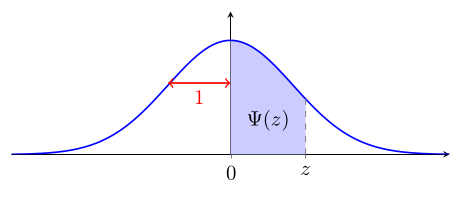
L'utilisation de $\Psi$ pour calculer l'aire sous la courbe en est légèrement différente :
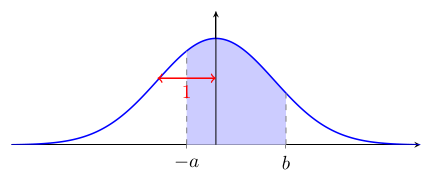
$\Psi(b) - \Psi(a) = $
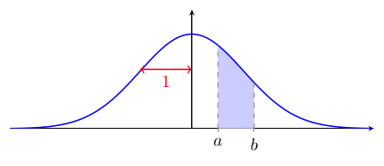
$\quad$ $\Psi(a) - \Psi(b) = $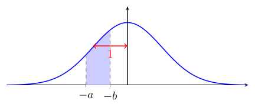
$0{,}5 + \Psi(a) = $
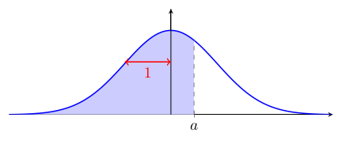
$\quad$ $0{,}5 - \Psi(a) = $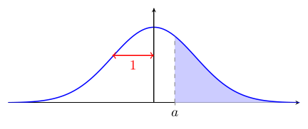
$0{,}5 - \Psi(a) = $
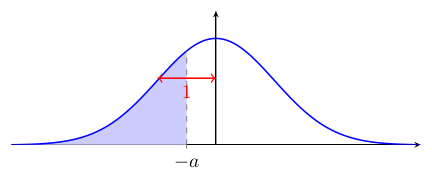
$\quad$ $0{,}5 + \Psi(a) = $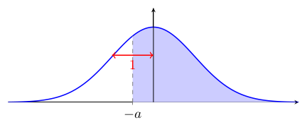
Bien entendu, si on a affaire à une loi normale non standard, on se ramène à ce qui peut être lu dans cette table via la cote $z$.
V.4 Digression 2 : estimateur sans biais
Un estimateur $\hat{\theta}$ d'un paramètre $\theta$ est une statistique, calculée à partir d'un échantillon, qui est utilisée pour estimer la valeur du paramètre $\theta$ dans la population.
La moyenne $\bar{x}$ d'un échantillon de taille $n$ est un estimateur de la moyenne $\mu$ de la population. L'écart-type expérimental $s$ d'un échantillon de taille $n$ est un estimateur de l'écart-type $\sigma$ de la population.
Un estimateur peut être bon ou mauvais : par exemple, si on prend la statistique « maximum de l'échantillon » pour estimer le paramètre « moyenne de la population », on s'attend (à juste titre) à ce que cet estimateur soit très mauvais. Moins trivialement, il est tout à fait possible que la formule qui donne le paramètre quand on l'applique à la population ne soit pas la même que la formule qui donne le meilleur estimateur à partir de l'échantillon : par exemple, la formule de l'écart-type d'une population est différente de la formule de l'écart-type d'un échantillon, et pourtant, c'est la formule de l'écart-type d'un échantillon qui est un meilleur estimateur de l'écart-type de la population que la formule de l'écart-type d'une population appliquée à l'échantillon. Pour quantifier la qualité d'un estimateur, on peut utiliser la notion de biais :
Le biais d'un estimateur $\hat{\theta}$ d'un paramètre $\theta$ est défini comme la différence entre la moyenne de l'estimateur sur tous les échantillons possibles et la valeur réelle du paramètre.
Un estimateur est dit sans biais si son biais est égal à zéro, c'est-à-dire si, en moyenne, il donne la bonne valeur du paramètre.
La moyenne $\bar{x}$ d'un échantillon de taille $n$ est un estimateur sans biais de la moyenne $\mu$ de la population.
Donnons-nous quelques notations pour pouvoir en faire la preuve :
-
On note $E$ un échantillon de taille $n$ pris dans la population de taille $N$.
-
On note $N_E$ le nombre d'échantillons différents de taille $n$ que l'on peut former à partir de la population de taille $N$.
-
On note $\overline{x}_E$ la moyenne de l'échantillon $E$.
Preuve : On veut vérifier si
$$ \frac{1}{N_E} \sum_{E} \overline{x}_E = \mu. $$
Remplaçons $\overline{x}_E$ par sa formule :
$$ \begin{align*} \frac{1}{N_E} \sum_{E} \overline{x}_E & = \frac{1}{N_E} \sum_{E} \frac{1}{n} \sum_{x_i \in E} x_i \\ & = \frac{1}{nN_E} \sum_{i=1}^N \sum_{E \ni x_i} x_i. \end{align*} $$
Entre la première et la deuxième ligne, on a interverti les deux sommes : au lieu de faire la somme sur les échantillons $E$ puis sur les éléments $x_i$ de chaque échantillon, on fait d'abord la somme sur les éléments $x_i$ de la population, puis pour chaque élément $x_i$, on fait la somme sur les échantillons $E$ qui contiennent cet élément $x_i$. De plus, comme $n$ ne dépend ni de $E$ ni de $x_i$, on peut le sortir de la somme.
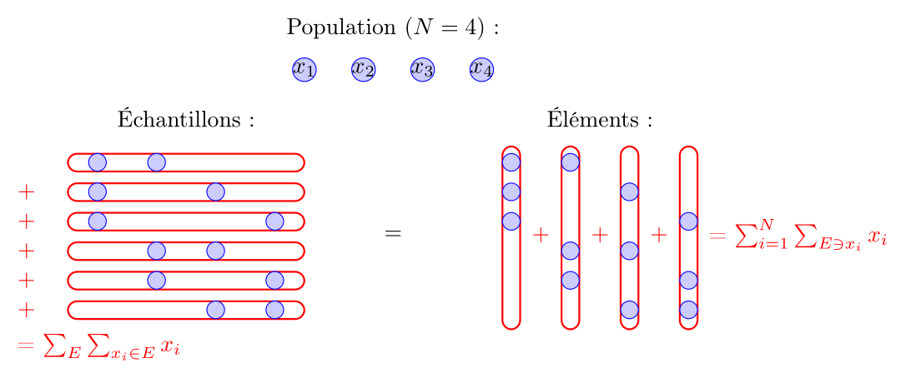
Maintenant, remarquons que la somme interne est simplement $x_i + \dots + x_i$, autant de fois que le nombre d'échantillons $E$ qui contiennent l'élément $x_i$. Or, ce nombre ne dépend en fait pas de $i$ : $x_i$ n'est pas spécial et il y a donc autant d'échantillons qui contiennent $x_i$ que d'échantillons qui contiennent $x_j$ pour tout $j$. Par conséquent, on peut remplacer la somme interne par $x_i \cdot k$, où $k$ est le nombre d'échantillons qui contiennent un élément donné de la population.
$$ \frac{1}{N_E} \sum_{E} \overline{x}_E = \frac{1}{nN_E} \sum_{i=1}^N kx_i = \frac{k}{nN_E} \sum_{i=1}^N x_i. $$
Pour conclure, il faut que $\frac{k}{nN_E} = \frac{1}{N}$, ce qui implique que $kN = nN_E$.
Or :
$$ \begin{align*} kN & = \text{nombre d'échantillons contenant $x_1$} \\ & + \dots \\ & + \text{nombre d'échantillons contenant $x_N$} \end{align*} $$
Dans cette somme, chacun des $N_E$ échantillons de taille $n$ est compté exactement $n$ fois, car il contient exactement $n$ éléments de la population (par exemple, si $n = 3$, $N = 7$ et un échantillon contient $x_2, x_3, x_7$, il apparaît dans la deuxième, troisième et septième termes de la somme). Par conséquent, la somme totale est égale à $nN_E$, ce qui conclut la preuve. ∎
Une propriété similaire est vraie pour la variance.
La variance expérimentale $\displaystyle s^2 = \frac{1}{n-1}\sum_{i=1}^n (x_i - \bar{x})^2$ d'un échantillon de taille $n$ est un estimateur sans biais de la variance $\sigma^2$ de la population.
La démonstration est considérablement plus technique si on ne dispose pas d'outils supplémentaires.
Résumé du chapitre
Loi normale et courbe de Gauss
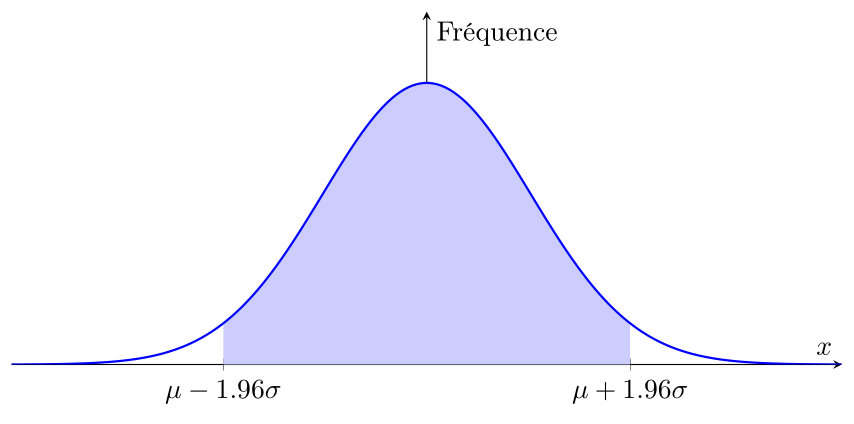
Propriétés clés :
-
Symétrique autour de la moyenne $\mu$
-
Largeur contrôlée par l'écart-type $\sigma$
-
Très commune dans la nature (tailles, poids, QI, etc.)
-
Permet de calculer des probabilités
Théorème central limite (TCL)
Si on prélève $n$ observations indépendantes d'une variable quelconque (même pas normale !) et qu'on les moyenne, la moyenne suit une loi normale.
| Cas | Condition | Résultat | Implication |
|---|---|---|---|
| Moyenne | $n \geq 30$ | $\displaystyle \bar{x} \sim \mathcal{N}\left(\mu, \left(\frac{\sigma}{\sqrt{n}}\right)^2\right)$ | Plus $n$ est grand, plus $\bar{x}$ converge vers $\mu$ |
| Proportion | $np \geq 5$ et $n(1-p) \geq 5$ | $\displaystyle \hat{p} \sim \mathcal{N}\left(p, \sqrt{\frac{p(1-p)}{n}}^2\right)$ | Plus $n$ est grand, plus $\hat{p}$ converge vers $p$ |
Intervalle de confiance
Si $X \sim \mathcal{N}(\mu, \sigma^2)$, alors l'intervalle $[\mu - 1,96\sigma, \mu + 1,96\sigma]$ contient 95 % des observations de $X$. Selon le cas (moyenne ou proportion) et ce qu'on connaît (paramètres ou statistiques), on remplace $\mu$ et $\sigma$ par les formules correspondantes, ce qui nous donne des formules d'intervalle de confiance à 95 % pour $\mu$ ou $p$.
En pratique :
$$ \mu \in \left[\bar{x} - 1,96 \cdot \frac{s}{\sqrt{n}},\quad \bar{x} + 1,96 \cdot \frac{s}{\sqrt{n}}\right] \quad \text{et} \quad p \in \left[\hat{p} - 1,96 \cdot \sqrt{\frac{\hat{p}(1-\hat{p})}{n-1}},\quad \hat{p} + 1,96 \cdot \sqrt{\frac{\hat{p}(1-\hat{p})}{n-1}}\right] $$
Interprétation :
-
95 % de confiance que cet intervalle contienne $\mu$ ou $p$ (selon le cas).
-
À confiance fixée, plus $n$ augmente, plus l'intervalle rétrécit. À $n$ fixé, plus la confiance augmente, plus l'intervalle s'élargit.
-
Si on veut un niveau de confiance de 99%, 99,9%, 99,99%, 99,999% etc., à la place de 1,96 on utilise respectivement 2,58, 3,29, 3,89, 4,42, etc.
V.5 Appendice : les valeurs de loi normale (à partir de 0)
Ce tableau donne la correspondance entre les cotes $z$ et les aires $P(0 < Z < z)$ où $Z \sim \mathcal{N}(0,1)$.
| $z$ | 0,00 | 0,01 | 0,02 | 0,03 | 0,04 | 0,05 | 0,06 | 0,07 | 0,08 | 0,09 |
|---|---|---|---|---|---|---|---|---|---|---|
| 0,0 | 0,0000 | 0,0040 | 0,0080 | 0,0120 | 0,0160 | 0,0199 | 0,0239 | 0,0279 | 0,0319 | 0,0359 |
| 0,1 | 0,0398 | 0,0438 | 0,0478 | 0,0517 | 0,0557 | 0,0596 | 0,0636 | 0,0675 | 0,0714 | 0,0753 |
| 0,2 | 0,0793 | 0,0832 | 0,0871 | 0,0910 | 0,0948 | 0,0987 | 0,1026 | 0,1064 | 0,1103 | 0,1141 |
| 0,3 | 0,1179 | 0,1217 | 0,1255 | 0,1293 | 0,1331 | 0,1368 | 0,1406 | 0,1443 | 0,1480 | 0,1517 |
| 0,4 | 0,1554 | 0,1591 | 0,1628 | 0,1664 | 0,1700 | 0,1736 | 0,1772 | 0,1808 | 0,1844 | 0,1879 |
| 0,5 | 0,1915 | 0,1950 | 0,1985 | 0,2019 | 0,2054 | 0,2088 | 0,2123 | 0,2157 | 0,2190 | 0,2224 |
| 0,6 | 0,2257 | 0,2291 | 0,2324 | 0,2357 | 0,2389 | 0,2422 | 0,2454 | 0,2486 | 0,2517 | 0,2549 |
| 0,7 | 0,2580 | 0,2611 | 0,2642 | 0,2673 | 0,2704 | 0,2734 | 0,2764 | 0,2794 | 0,2823 | 0,2852 |
| 0,8 | 0,2881 | 0,2910 | 0,2939 | 0,2967 | 0,2995 | 0,3023 | 0,3051 | 0,3078 | 0,3106 | 0,3133 |
| 0,9 | 0,3159 | 0,3186 | 0,3212 | 0,3238 | 0,3264 | 0,3289 | 0,3315 | 0,3340 | 0,3365 | 0,3389 |
| 1,0 | 0,3413 | 0,3438 | 0,3461 | 0,3485 | 0,3508 | 0,3531 | 0,3554 | 0,3577 | 0,3599 | 0,3621 |
| 1,1 | 0,3643 | 0,3665 | 0,3686 | 0,3708 | 0,3729 | 0,3749 | 0,3770 | 0,3790 | 0,3810 | 0,3830 |
| 1,2 | 0,3849 | 0,3869 | 0,3888 | 0,3907 | 0,3925 | 0,3944 | 0,3962 | 0,3980 | 0,3997 | 0,4015 |
| 1,3 | 0,4032 | 0,4049 | 0,4066 | 0,4082 | 0,4099 | 0,4115 | 0,4131 | 0,4147 | 0,4162 | 0,4177 |
| 1,4 | 0,4192 | 0,4207 | 0,4222 | 0,4236 | 0,4251 | 0,4265 | 0,4279 | 0,4292 | 0,4306 | 0,4319 |
| 1,5 | 0,4332 | 0,4345 | 0,4357 | 0,4370 | 0,4382 | 0,4394 | 0,4406 | 0,4418 | 0,4429 | 0,4441 |
| 1,6 | 0,4452 | 0,4463 | 0,4474 | 0,4484 | 0,4495 | 0,4505 | 0,4515 | 0,4525 | 0,4535 | 0,4545 |
| 1,7 | 0,4554 | 0,4564 | 0,4573 | 0,4582 | 0,4591 | 0,4599 | 0,4608 | 0,4616 | 0,4625 | 0,4633 |
| 1,8 | 0,4641 | 0,4649 | 0,4656 | 0,4664 | 0,4671 | 0,4678 | 0,4686 | 0,4693 | 0,4699 | 0,4706 |
| 1,9 | 0,4713 | 0,4719 | 0,4726 | 0,4732 | 0,4738 | 0,4744 | 0,4750 | 0,4756 | 0,4761 | 0,4767 |
| 2,0 | 0,4772 | 0,4778 | 0,4783 | 0,4788 | 0,4793 | 0,4798 | 0,4803 | 0,4808 | 0,4812 | 0,4817 |
| 2,1 | 0,4821 | 0,4826 | 0,4830 | 0,4834 | 0,4838 | 0,4842 | 0,4846 | 0,4850 | 0,4854 | 0,4857 |
| 2,2 | 0,4861 | 0,4864 | 0,4868 | 0,4871 | 0,4875 | 0,4878 | 0,4881 | 0,4884 | 0,4887 | 0,4890 |
| 2,3 | 0,4893 | 0,4896 | 0,4898 | 0,4901 | 0,4904 | 0,4906 | 0,4909 | 0,4911 | 0,4913 | 0,4916 |
| 2,4 | 0,4918 | 0,4920 | 0,4922 | 0,4925 | 0,4927 | 0,4929 | 0,4931 | 0,4932 | 0,4934 | 0,4936 |
| 2,5 | 0,4938 | 0,4940 | 0,4941 | 0,4943 | 0,4945 | 0,4946 | 0,4948 | 0,4949 | 0,4951 | 0,4952 |
| 2,6 | 0,4953 | 0,4955 | 0,4956 | 0,4957 | 0,4959 | 0,4960 | 0,4961 | 0,4962 | 0,4963 | 0,4964 |
| 2,7 | 0,4965 | 0,4966 | 0,4967 | 0,4968 | 0,4969 | 0,4970 | 0,4971 | 0,4972 | 0,4973 | 0,4974 |
| 2,8 | 0,4974 | 0,4975 | 0,4976 | 0,4977 | 0,4977 | 0,4978 | 0,4979 | 0,4979 | 0,4980 | 0,4981 |
| 2,9 | 0,4981 | 0,4982 | 0,4982 | 0,4983 | 0,4984 | 0,4984 | 0,4985 | 0,4985 | 0,4986 | 0,4986 |
| 3,0 | 0,4987 | 0,4987 | 0,4987 | 0,4988 | 0,4988 | 0,4989 | 0,4989 | 0,4989 | 0,4990 | 0,4990 |
| 3,1 | 0,4990 | 0,4991 | 0,4991 | 0,4991 | 0,4992 | 0,4992 | 0,4992 | 0,4992 | 0,4993 | 0,4993 |
| 3,2 | 0,4993 | 0,4993 | 0,4994 | 0,4994 | 0,4994 | 0,4994 | 0,4994 | 0,4995 | 0,4995 | 0,4995 |
| 3,3 | 0,4995 | 0,4995 | 0,4995 | 0,4996 | 0,4996 | 0,4996 | 0,4996 | 0,4996 | 0,4996 | 0,4997 |
| 3,4 | 0,4997 | 0,4997 | 0,4997 | 0,4997 | 0,4997 | 0,4997 | 0,4997 | 0,4997 | 0,4997 | 0,4998 |
| 3,5 | 0,4998 | 0,4998 | 0,4998 | 0,4998 | 0,4998 | 0,4998 | 0,4998 | 0,4998 | 0,4998 | 0,4998 |
| 3,6 | 0,4998 | 0,4998 | 0,4999 | 0,4999 | 0,4999 | 0,4999 | 0,4999 | 0,4999 | 0,4999 | 0,4999 |
| 3,7 | 0,4999 | 0,4999 | 0,4999 | 0,4999 | 0,4999 | 0,4999 | 0,4999 | 0,4999 | 0,4999 | 0,4999 |
| 3,8 | 0,4999 | 0,4999 | 0,4999 | 0,4999 | 0,4999 | 0,4999 | 0,4999 | 0,4999 | 0,4999 | 0,4999 |
| 3,9 | 0,5000 | 0,5000 | 0,5000 | 0,5000 | 0,5000 | 0,5000 | 0,5000 | 0,5000 | 0,5000 | 0,5000 |
- En particulier dans votre manuel page 224. ↩